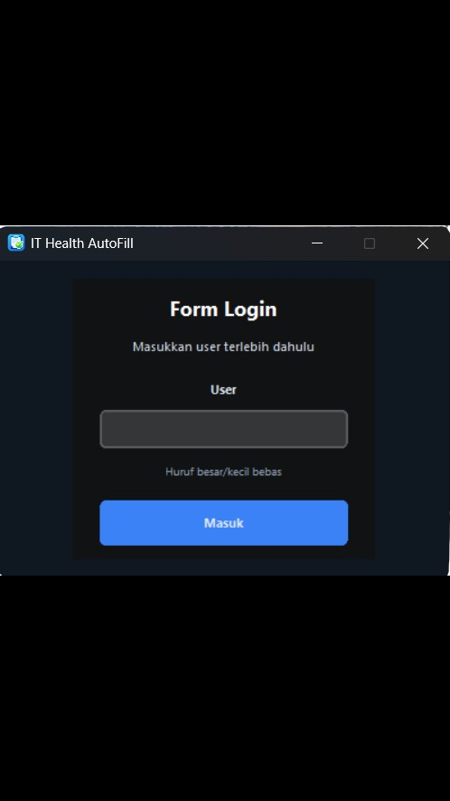
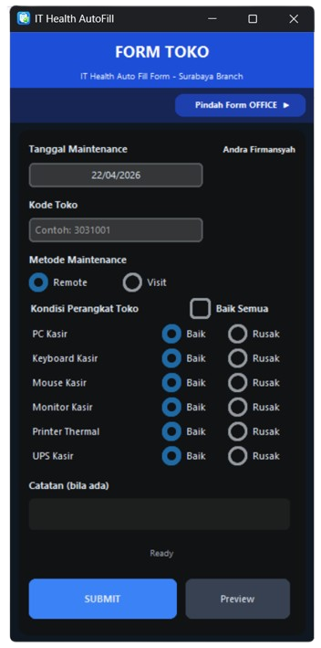
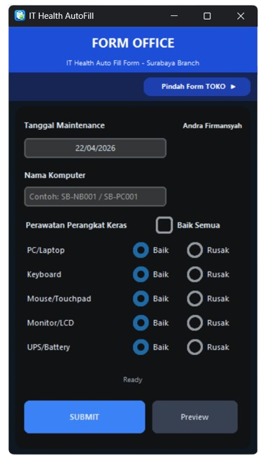

Input IT Health jadi lebih cepat, otomatis, dan tanpa ribet. Data langsung terkirim ke Google Form hanya dengan sekali klik.
⬇ Download SekarangSetup v1.1.0 • Windows

Tampilan sederhana, fokus ke kecepatan & kemudahan
Akses aplikasi dengan akun user

Input data untuk cabang toko

Input data untuk kantor pusat